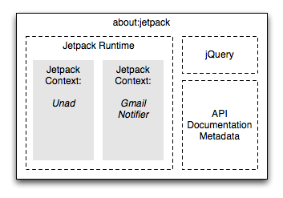

I am Jetpack. Welcome.
Exploring new ways to extend & personalize the Web.
The add-ons community for Firefox is arguably one of the largest, most vibrant sources for innovation on the Web today. If you want to affect people, to reach them and make a difference in their daily lives, the Firefox add-ons platform is hard to beat, with over one billion installs of Firefox add-ons to date.
However, we've only scratched the surface of its potential.
Jetpack lets you build Firefox (and more!) extensions with the same skill-set you already know from building on the open Web: Javascript, HTML, and CSS. We've even got jQuery included by default to ease you into it.
Make sure to visit the Jetpack website!
Demo Jetpack Features
- Video Slide - Slide Bar Demo — ~50 lines of code and html to save <video> elements (and embeds) into the SlideBar when clicking the icon. Videos that are currently playing will import without stopping for <video> elements -- yay OpenVideo! Watch videos and check email or whatever you want at the same time!
- UnAd - Content Filter Demo — Demonstrates in ~80 lines of code how to build a Jetpack feature that can remove unwanted scripts, images, and iframes with a pretty UI for turning the feature on and off. It uses a blocklist created for AdBlock Plus.
- Email Notifier - Status Bar Demo — It's easy to make useful indicators, gauges, and ambient information displays when you have the full power of HTML and CSS. In this demo, we create a Gmail notifier in ~50 lines of code.
Developing With Jetpack
If you want to create a Jetpack feature, use the editor below.
Read the Tutorial for a quick tour of the basics—or, if you prefer, check out the API Reference.

About This Page
This page houses the Jetpack Runtime. All your Jetpacks
are loaded into their own Jetpack Contexts within the
Runtime, and you can even use Firebug to inspect their current
state. Just try entering JetpackRuntime.contexts in your
Firebug console!
As a result, the lifetime of your Jetpacks is tied to the lifetime of this page. When you reload this page, for instance, all your Jetpacks are reloaded. This means that the time between making a change to a Jetpack and seeing its effects is as small as possible—you never have to restart your browser.
Because it only makes sense for one instance of Jetpack to exist at a time, this page is what developers call a singleton: only one instance of it can exist at once. Try opening this URL in two tabs at once and see what happens!
Finally, the Jetpack singleton always exists, since users obviously need to be able to use their Jetpacks without having Jetpack open in a tab. If you close the Jetpack tab, it'll actually re-open in a hidden browser that you can't see.
Modifying The Platform
If you want to hack on the Jetpack platform itself, the vast majority of it is contained in the . Just make local changes to the file or one of the scripts it refers to and reload this page.
We've also got in-progress Platform Documentation to help you understand how everything works.
Your Jetpack Features
These are your recently-uninstalled Jetpack Features. You can reinstall them easily from here, or you can purge them from this list so they no longer clutter this page.
Memory Usage
Below is a list of all live objects being tracked by Jetpack. If one of these numbers never goes down, then your Jetpack either has a memory leak or isn't using memory very effectively.
Test Suites
At the moment, you can run the . In the future, you'll be able to run the test suites for individual Jetpacks here.
All output for the suites is sent to the .